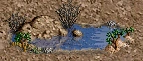
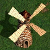

| Арена |
+2 до Атаки АБО +2 до Захисту на вибір. |
| Башня Марлетто |
+1 до Захисту. |
| Бібліотека Просвітлення |
+2 до характеристик героїв рівнем вище 10-го. |
| Буй |
+1 до бойового духу до наступної битви. |
| Військова Академія |
+1 до Атаки АБО +1 до Захисту на вибір за 1000 золота. |
| Волшебне Джерело |
Відновлює та подвоює максимальну кількість балів заклинань для одного героя один раз на тиждень. |
| Дерево пізнання |
Підвищує рівень героя за 2000 золота АБО за 10 самоцвітів АБО безкоштовно. |
| Зоряна вісь |
+1 до сили магії. |
| Ідол удачі |
+1 до бойового духу до наступної битви в непарні дні тижня, +1 до удачі в парні, або до обох параметрів на 7-й день ігрового тижня. |
| Камінь знань |
+1000 досвіду один раз для кожного героя. |
| Колодець магії |
Повністю відновлює запас очок магії героя. |
| Кільце фей |
+1 до удачі до наступної битви. |
| Лагерь найманців |
+1 до Атаки. |
| Лебедине озеро |
+2 до удачі до наступної битви (залишок ходу втрачається). |
| Оазис |
+1 до бойового духу до наступної битви + збільшення дальності пересування на 800 од. |
| Родник  |
+1 до бойового духу до наступної битви + збільшення дальності пересування на 400 од. |
| Русалка |
+1 до удачі до наступної битви. |
| Сад откровений |
+1 до Знання. |
| Святиня магічних пісень |
Дозволяє вивчити випадкове заклинання 1-го рівня. |
| Святиня магічних жестів |
Дозволяє вивчити випадкове заклинання 2-го рівня. |
Святиня магічних думок |
Дозволяє вивчити випадкове заклинання 3-го рівня (потрібна навичка Мудрість). |
| Університет |
Дозволяє герою навчитися чотирьом випадковим вторинним навичкам ціною в 2000 золота за кожен. |
| Учений |
+1 до характеристики / навчання вторинному навику / випадковому заклинаню. |
| Флаг єдності |
+1 до бойового духу й удачі до наступної битви + збільшення дальності пересування на 400 од. |
| Фонтан юності |
+1 до бойового духу до наступної битви + збільшення дальності пересування на 400 од. |
| Фонтан удачі |
Міняє удачу до наступної битви (діапазон -1 ... + 3). |
| Храм |
+1 до бойового духу до наступної битви, +2 - при відвідуванні храму в неділю (на 7-й день ігрового тижня). |
| Хижина ведьми |
Герой безкоштовно навчається випадковому вторинному навику. |
| Школа магії |
+1 до Сили магії АБО +1 до Знання на вибір за 1000 золота. |
| Покинутий корабель |
Охороняється елементалями води, за перемогу над якими герой отримає золото та артефакти. |
| Корабельна аварія |
Охороняється привидами загиблих моряків, за перемогу над якими герой отримає золото та артефакти. |
Консерваторія грифонів |
Охороняється грифонами, за перемогу над якими герой отримає кілька ангелів у свою армію. |
| Піраміда |
Охороняється золотими та алмазними големами, за перемогу над якими герой може отримати високорівневе заклинання у свою книгу. |
| Склади циклопів |
Охороняється циклопами, за перемогу над якими герой отримає цінні ресурси. |
| Склеп |
Охороняється істотами Некрополіса, за перемогу над якими герой отримає золото та артефакти. |
| Сокровищниця гномів |
Охороняється гномами, за перемогу над якими герой отримає золото та кристали. |
| Нага-банк |
Охороняється нагами, за перемогу над якими герой отримає золото та самоцвіти. |
| Тайник бісів |
Охороняється бісами, за перемогу над якими герой отримає золото та ртуть. |
| Вулик зміїв |
Охороняється зміями та бабками, за перемогу над якими герой отримає загін виверн у свою армію. |
| Утопія драконів |
Охороняється загонами драконів, за перемогу над якими герой отримає велику суму золота та кілька цінних артефактів. |
| Хранилище медуз |
Охороняється медузами, за перемогу над якими герой отримає золото та сірку. |
| Закинута шахта |
Охороняється ордою троглодитів, за перемогу над якими герой отримає в розпорядження робочу шахту. |
| Золота шахта |
Приносить 1000 од. золота в день. |
| Кристальна печера |
Приносить 1 од. кристалів в день. |
Лабораторія алхіміка |
Приносить 1 од. ртуті в день. |
| Лісопилка |
Приносить 2 од. деревини в день. |
| Розсип самоцвітів |
Приносить 1 од. самоцвітів в день. |
| Рудна шахта |
Приносить 2 од. руди в день. |
| Сірчаний кар'єр |
Приносить 1 од. сірки в день. |
| Золото |
+ 500-1000 од. золота в казну. |
Деревина |
+ 5-10 од. деревини в казну. |
| Руда |
+ 5-10 од. руди в казну. |
| Самоцвіти |
+ 3-6 од. самоцвітів в казну. |
| Кристали |
+ 3-6 од. кристалів в казну. |
| Ртуть |
+ 3-6 од. ртуті в казну. |
| Сірка |
+ 3-6 од. сірки в казну. |
| Вогонь |
+ 400-600 од. золота та 4-6 од. випадкового ресурсу. |
| Сундук з сокровищами |
+ 1000-2000 золота в казну або Досвід в обмін. 5% - артефакт. |
| Обломки |
+ 200-500 золота, 5-10 деревини. Зрідка - нічого. |
| Морський сундук |
+ 1500 од. золота або артефакт. Часто - нічого. |
| Потерпілий |
Потерпілий нагороджує свого спасителя випадковим артефактом. |
| Навіс |
+ 1-5 од. випадкового ресурсу. |
Гробниця воїна |
Обискавши гробницю, герой обов'язково знайде артефакт, іноді - цінний. Разом з тим бойовий дух армії буде знижений на 3 од. |
| Скелет |
Обискавши останки, у героя є невеликий шанс знайти артефакт. |
| Повозка |
+ 2-5 од. випадкового ресурсу / артефакт. Зрідка - нічого. |
| Вітряний млин  |
+ 3-6 од. випадкового ресурсу. |
| Водяний млин |
+1000 од. золота (+500 од. в перший раз). |
| Містичний сад |
+500 од. золота / +5 од. самоцвітів. |
Верф |
Дозволяє будувати кораблі. |
| Водоворот |
Переносить героя до іншого водовороту на карті, при цьому частина юнітів армії гине у водовороті. |
| Гарнізон |
Гарнізон перегороджує шлях у певні області та може охоронятися загонами ворожих юнітів. |
Гільдія найманих працівників |
Дозволяє обмінювати юнітів на ресурси. |
| Око мага |
Дозволяє спостерігати за областями, де вони розташовані, якщо герой відвідає Хижину мага. |
| Жертвенний вівтар |
Дозволяє принести в жертву істот або артефакти заради отримання героєм досвіду. |
| Картограф |
Продає карту поверхні / підземелля / моря за 1000 золотих. |
| Конюшні |
Свіжі коні збільшують дальність пересування героя до кінця тижня. |
| Корабель |
Дозволяє героям разом з арміями подорожувати по воді. |
| Лагерь біженців |
Дозволяє наймати випадкових юнітів щотижня. |
| Лігво ворів |
Безкоштовно надає стратегічну інформацію про армії та економіку противника. |
| Маяк |
Збільшує запас пересування по морю. |
| Морська пляшка |
Містить інформацію. |
| Наглядова вишка |
Дозволяє відкрити невідомі області карти у великому радіусі навколо вишки. |
| Обеліск |
Відкриває частину карти-загадки, необхідної для пошуку Грааля. |
| Вогняний стовп |
Дозволяє відкрити невідомі області карти у великому радіусі навколо стовпа. |
Палатка ключника |
Дозволяє пройти відповідні кольору палатки Пограничні ворота або Стража кордону. |
| Пограничні ворота |
Врата перегороджують шлях у певні області, в які буде неможливо пройти, поки герой не відвідає відповідну воротам палатку хранителя ключів. Не зникають після того, як через них пройшли. |
| Підземні ворота |
Дозволяють потрапити в підземелля. |
| Покров тьми |
Приховує найближчий підконтрольний замок від розвідників противника. |
| Портал |
Переносить героя до іншого порталу або до виходу з нього. |
| Ринок |
Дозволяє вигідно продавати або обмінювати ресурси. |
| Святилище |
Сховавшись тут, герой буде в безпеці - ворог не посміє атакувати святилище. |
| Сирени |
При відвідуванні сирени знищать частину армії героя, але він отримає досвід відповідно до сумарного здоров'я вбитих юнітів. |
| Страж кордону |
Страж перегороджує шлях у певні області, в які буде неможливо пройти, поки герой не відвідає відповідну воротам палатку хранителя ключів. Зникають, коли через них пройшли. |
| Страж завдання |
Страж перегороджує шлях у певні області, в які буде неможливо пройти, поки герой не виконає завдання стража. |
| Таверна |
Дозволяє найняти героїв та дізнатися останні чутки. |
| Тюрьма |
Відвідавши тюрму, гравець може звільнити ув'язненого в ній героя, який потім безкоштовно перейде на його бік разом зі своєю армією. |
| Покажчик |
Містить інформацію. |
Фабрика військової техніки |
Дозволяє придбати бойові машини. |
| Форт на холмі |
Дозволяє покращувати базових юнітів за зниженою ціною. |
| Хижина мага |
Показує області карти, де розташовані «Глаза мага». |
Хижина провидця |
Провидець видає завдання, виконавши яке, герой отримає нагороду. |
| Чорний ринок |
Дозволяє продавати або купувати артефакти. |
| Ящик Пандори |
Після підтвердження відкриття відбувається випадкова подія, після чого об'єкт зникає. Може виявитися пустим, тобто нічого не відбудеться. |